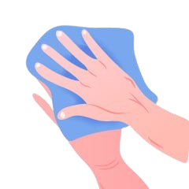

The Corona virus (covid-19) was first reported in
wuhan,hubei,china in december 2019 , the outbreak
was later recognized as a pandemic by the world
health organization (who) on 11 march 2020.
DEATHS
3467,432
RECOVERED
4,556,091
WORLDWIDECASES
8,949,671
* Last updated : Jun 21, 2020, 09:24 AM
America/Chicago
ABOUT THE DISEASE
CORONAVIRUS (COVID-19)
COVID-19 is a new illness that can affect your lungs and airways.
It's caused by a virus called coronavirus. It was discovered in December 2019 in Wuhan, Hubei, China.
Common signs of infection include respiratory symptoms, fever, cough, shortness of breath and breathing difficulties. In more severe cases, infection can cause pneumonia, severe acute respiratory syndrome, kidney failure and even death.
Standard recommendations to prevent infection spread include regular hand washing, covering mouth and nose when coughing and sneezing, thoroughly cooking meat and eggs. Avoid close contact with anyone showing symptoms of respiratoryillness such as coughing and sneezing
HOW CORONAVIRUS IS SPREAD
TRANSMISSION OF (COVID-19)
Because it's a new illness, we do not know exactly how coronavirus spreads from person to person. Similar viruses are spread in cough droplets
Person-to-person spread as close contact with infected
The coronavirus is thought to spread mainly from person to person. This can happen between people who are in close contact with one another.
Touching or contact with infected surfaces or objects
A person can get COVID-19 by touching a surface or object that has the virus on it and then touching their own mouth, nose, or possibly their eyes.
Droplets from infected person’s coughs or sneezes
The coronavirus can spread through droplets that are expelled when an infected person coughs or sneezes.
WHAT ARE THE SYMPTOMS OF COVID-19 ?
SYMPTOMS OF CORONAVIRUS
The most common symptoms of COVID-19 are fever, tiredness, and dry cough. Some patients may have aches and pains, nasal congestion, runny nose, sore throat or diarrhea. These symptoms are usually mild and begin gradually. Also the symptoms may appear 2-14 days after exposure.
Fever
High Fever: this means you feel hot to touch on your chest or back (you do not need to measure your temperature). It is a common sign and also may appear in 2-10 days if you affected
Cough
Continuous coughspan : this means coughing a lot for more than an hour, or 3 or more coughing episodes in 24 hours (if you usually have a cough, it may be worse than usual).
Shortness of breath
Difficulty breathing : Around 1 out of every 6 people who gets COVID-19 becomes seriously ill and develops difficulty breathing or shortness of breath.
HOW TO PROTECT YOURSELF
PREVENTION & ADVICE
There is currently no vaccine to prevent coronavirus disease 2019 (COVID-19). The best way to prevent illness is to avoid being exposed to this virus. Stay aware of the latest information on the COVID-19 outbreak, available on the WHO website and through your national and local public health authority.
Wash your hands frequently
Regularly and thoroughly clean your hands with an alcohol-based hand rub or wash them with soap and water for at least 20 seconds.
Maintain social distancing
Maintain at least 1 metre (3 feet) distance between yourself & anyone who is coughing or sneezing. If you are too close, get chance to infected.
Avoid touching face
Hands touch many surfaces and can pick up viruses. So, hands can transfer the virus to your eyes, nose or mouth and can make you sick.
Practice respiratory hygiene
Maintain good respiratory hygiene as covering your mouth & nose with your bent elbow or tissue when cough or sneeze.
Take steps to protect others
1 : Stay home if you’re sick
Stay home if you are sick, except to get medical care.
2 : Cover your mouth and nose
– You should wear a facemask when you are around other people (e.g., sharing a room or vehicle) and before you enter a healthcare provider’s.
3 : Wear a facemask if you are sick
– You should wear a facemask when you are around other people (e.g., sharing a room or vehicle) and before you enter a healthcare provider’s
4 : Clean AND disinfect frequently touched surfaces daily
– This includes phones, tables, light switches, doorknobs, countertops, handles, desks, toilets, faucets, and sinks.
5 : Clean the dirty surfaces
– Use detergent or soap and water prior to disinfection.
6 : Stay informed about the local COVID-19 situation
– Get up-to-date information about local COVID-19 activity from
public health officials
7 : Dedicated, lined trash can
– If possible, dedicate a lined trash can for the ill person. Use gloves when removing garbage bags, and handling & disposing of trash.
Follow steps to wash hands
why do i need my hand ?
Soap on Hand
Palm to Palm
Between Fingers
Back to Hands
Clean with Water

Focus on Wrist
BE CAREFUL & STAY SAFE
TREATMENT FOR CORONAVIRUS
To Date, There Is No Vaccine And No Specific Antiviral Medicine
To Prevent Or Treat COVID-2019. However, Those Affected
Should Receive Care To Relieve Symptoms. People With Serious
Illness Should Be Hospitalized. Most Patients Recover Thanks To
Supportive Care.
Antibiotics Do Not Help, As They Do Not Work Against Viruses
Treatment Aims To Relieve The Symptoms While Your Body
Fights The Illness. You'll Need To Stay In Isolation, Away From
Other People, Until You Have Recovered.
Self Care
If you have mild symptoms, stay at home until you’ve recovered. You can relieve your symptoms if you:
1: Rest and sleep
2: Keep warm
3: Drink plenty of liquids
4: Use a room humidifier or take a hot shower to help ease a sore throat and cough
Medical Treatments
If you develop a fever, cough, and have difficulty breathing, promptly seek medical care. Call in advance and tell your health provider of any recent travel or recent contact with travelers.
DO’S & DON’TS
PROTECT YOURSELF
The best thing you can do now is plan for how you can adapt your daily routine. Take few steps to protect yourself as Clean your hands often, Avoid close contact, Cover coughs and sneezes, clean daily used surfaces etc. The best way to prevent illness is to avoid being exposed to this virus.
Avoid Close Contact
Don’t Touch Face
Social Distancing
Wash Your Hands
Drink Much Watar
Use Face Mask
RECENT FROM BLOG
last UPDATE
Caring for someone at home
Most people who get sick with COVID-19 will have only mild illness and should recover at home. Care at home can help stop the spread of COVID-19.
15 ways to keep safe and healthy
Most people who get sick with COVID-19 will have only mild illness and should recover at home. Care at home can help stop the spread of COVID-19.
If You Think You Are Sick
If you are sick with COVID-19 or think you might have it, follow the steps below to help protect other people in your home and community.
COVID-19
_This website is for health information and advice about coronavirus (COVID-19), how to prevent and protect yourself from disease.
_Learn about the government response to coronavirus on GOV.UK
QUICK LINK
i.about corona
ii.symptoms
iii.prevention
iv.protect your self
HELPFULL LINK
A.who websit
B.cdc website
C.nhs website
D.harverd health
important LINK
i.healthcare professional
ii.healthcare facilities
iii.older adults medical condition
iv.repare your family
2020 COVID-19. Template Made by eng : Elsayed Ebrahim Ahmed.
 Social Distancing
Social Distancing